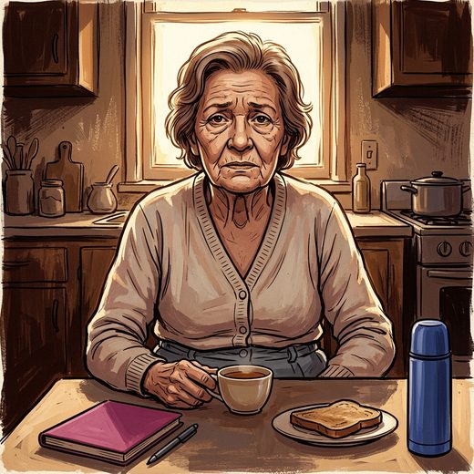

Consulta rápida à beira do leito
Condutas, doses e interações.
Referências da aula · 6
- Chen LK, Hsiao FY, Akishita M, et al. A focus shift from sarcopenia to muscle health in the Asian Working Group for Sarcopenia 2025 Consensus Update. Nat Aging. 2025;5(11):2164-2175. doi:10.1038/s43587-025-01004-y.DOI
- Bauer J, Biolo G, Cederholm T, Cesari M, Cruz-Jentoft AJ, Morley JE, et al. Evidence-based recommendations for optimal dietary protein intake in older people: a position paper from the PROT-AGE Study Group. J Am Med Dir Assoc. 2013;14(8):542-59. PMID 23867520. doi:10.1016/j.jamda.2013.05.021.PubMedDOI
- Deutz NE, Bauer JM, Barazzoni R, Biolo G, Boirie Y, Bosy-Westphal A, et al. Protein intake and exercise for optimal muscle function with aging: recommendations from the ESPEN Expert Group. Clin Nutr. 2014;33(6):929-36. PMID 24814383. doi:10.1016/j.clnu.2014.04.007.PubMedDOI
- Volkert D, Beck AM, Cederholm T, Cruz-Jentoft A, Hooper L, Kiesswetter E, et al. ESPEN practical guideline: clinical nutrition and hydration in geriatrics. Clin Nutr. 2022;41(4):958-89. PMID 35306388. doi:10.1016/j.clnu.2022.01.024.PubMedDOI
- Cruz-Jentoft AJ, Bahat G, Bauer J, Boirie Y, Bruyère O, Cederholm T, et al. Sarcopenia: revised European consensus on definition and diagnosis. Age Ageing. 2019;48(1):16-31. PMID 30312372. doi:10.1093/ageing/afy169.PubMedDOI
- Núcleo de Estudos e Pesquisas em Alimentação (NEPA), UNICAMP. Tabela Brasileira de Composição de Alimentos (TACO). 4ª ed. Campinas: NEPA-UNICAMP; 2011.
Documentos oficiais
Leis e publicações do Ministério da Saúde sobre o cuidado da pessoa idosa, de acesso livre.
Abrir os documentos